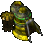
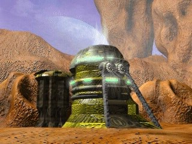
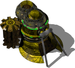

Mega Factory



Level 1 (base building)
- Power required:
- 1200
- Energy (HP):
- 3750
- Max number of workers:
- 150?
- Build time:
- 36 s?
Costs: Extract 7000 Iron 5000 Carbon 3000 Titanium 1200
Upgrade 1: Mega Factory
Research required: Mega Factory Upgrade

- Power required:
- 1000
- Energy (HP):
- 3750
- Max number of workers:
- 150?
- Build time:
- 72 s?
Costs: Extract 3000 Iron 1800 Carbon 1500 Titanium 2000
Config values not shown in game (9)
SIGHT- 6
BUILDER- 150
TRACE- 2
HEIGHT- 1
COMPONENT_QUANT- 1
SPRITE_QUANTITY- 1
TYPE- R_aFABRYKA
AIBLD- AIBLD_PLANE_FACTORY3
AREA- 1, 1, 1, 0, 0, 0, 0, 0, 0, 0, 1, 1, 1, 0, 0, 0, 0, 0, 0, 0, 1, 1, 1, 0, 0, 0, 0, 0, 0, 0, 1, 1, 1, 0, 0, 0, 0, 0, 0, 0, 0, 0, 0, 0, 0, 0, 0, 0, 0, 0, 0, 0, 0, 0, 0, 0, 0, 0, 0, 0, 0, 0, 0, 0, 0, 0, 0, 0, 0, 0, 0, 0, 0, 0, 0, 0, 0, 0, 0, 0, 0, 0, 0, 0, 0, 0, 0, 0, 0, 0, 0, 0, 0, 0, 0, 0, 0, 0, 0, 0
Description
This super-heavy manufacturing facility is for the production of the most powerful alien vehicles. Both ground and air forces can be produced, and, after refitting, heavy vertical take-off machines. This factory makes defeating humans a pleasant and easy task. Newly constructed units are placed in hangars, at the airfield or at the launch pad, depending on the type of vehicle.
Related
- Requires
- Mother, Heavy Factory, Mega Factory, Mega Factory Upgrade
- Unlocks
- Ion Cannon, Dragon, Hydra, RX Hydra, Starship, Mega Factory Upgrade, Dragon, Hydra, RX Hydra, Bionic Sight, Magna Shell, Shadow Rocket, HM Cyclop, Minotaur, HM Cyclop, Minotaur
- Researched by project
- Mega Factory, Mega Factory Upgrade
- Produces
- RX Hydra (slot 0), Hydra (slot 1), Dragon (slot 2), HM Cyclop (slot 3), Minotaur (slot 4)
Config values not shown in game (9)
SIGHT- 4
BUILDER- 150
TRACE- 2
HEIGHT- 1
COMPONENT_QUANT- 1
SPRITE_QUANTITY- 1
TYPE- R_aFABRYKA
AIBLD- AIBLD_PLANE_FACTORY
AREA- 1, 1, 1, 0, 0, 0, 0, 0, 0, 0, 1, 1, 1, 0, 0, 0, 0, 0, 0, 0, 1, 1, 1, 0, 0, 0, 0, 0, 0, 0, 1, 1, 1, 0, 0, 0, 0, 0, 0, 0, 0, 0, 0, 0, 0, 0, 0, 0, 0, 0, 0, 0, 0, 0, 0, 0, 0, 0, 0, 0, 0, 0, 0, 0, 0, 0, 0, 0, 0, 0, 0, 0, 0, 0, 0, 0, 0, 0, 0, 0, 0, 0, 0, 0, 0, 0, 0, 0, 0, 0, 0, 0, 0, 0, 0, 0, 0, 0, 0, 0